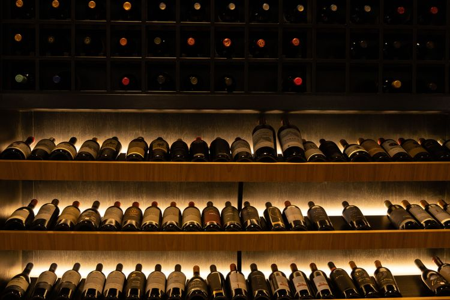

Formas de armazenamento
Como armazenamos nosso produto?
O armazenamento adequado é fundamental para preservar a qualidade dos vinhos. Na Vinheria Agnello, nossas garrafas são mantidas em condições que no geral ajudam a protegê-las de fatores que podem alterar suas características originais e assim entregando um vinho de extrema qualidade para os nossos clientes.

Transporte e conservação como ocorre?
O transporte dos vinhos há de ser realizado com cuidado para preservar a qualidade do produto até sua chegada ao cliente. Durante o trajeto, as garrafas são protegidas contra impactos, movimentações excessivas, variações de temperatura, fontes de calor e condições que possam prejudicar sua conservação e estado.
Como você pode armazenar na sua casa?
Mesmo sem possuir uma adega ou um espaço específico para vinhos, é possível armazenar as garrafas de maneira adequada em casa. O mais importante é escolher um local fresco, protegido da luz direta e que não sofra com grandes variações de temperatura.
As garrafas devem ficar longe de janelas, fogões, fornos e outros locais que recebam calor constantemente. Também é importante evitar lugares com muita movimentação ou vibração, mantendo as garrafas em uma posição estável.
| TIPO | TEMPERATURA | CUIDADOS |
|---|---|---|
| Vinho Tinto | 12°C a 18°C | Manter longe do calor e luz direta |
| Vinho Rosé | 8°C a 12°C | Evitar calor e grandes variações de temperatura |
| Espumante | 6°C a 10°C | Manter em local fresco e sem movimentção excessiva |